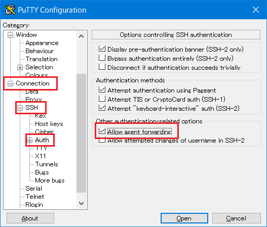

Loggin to to the Fugaku by using local account, logging to login node with using SSH Version2 (Publick key authentication).
Create an SSH key pair (public key and private key) on the user terminal in advance and register the public key from the Fugaku website screen.
Register only the public key. When a private key is registered, processing such as temporary suspension of login may be performed as a security measure.
Note
If you change the permissions of the following directories and files under the home directory of the login node, you will not be able to login using ssh.
This section describes the procedure for creating key pair of Ed25519 (public / private keys) using UNIX / Linux (OpenSSH) and Windows (puttygen). To use puttygen, it is necessary to install the terminal emulator PuTTY (patty) in advance.
Execute a command ssh-keygen on the user’s device, create a private / public key pair.
Start terminal and execute a command ssh-keygen.
If Mac(OS X), start Terminal(Application ‣ Utility ‣ Terminal) and execute a command ssh-keygen.
If UNIX/Linux, start terminal emulator and execute a command ssh-keygen.
[terminal]$ ssh-keygen-ted25519
Generating public/private ed25519 key pair.Enter file in which to save the key (/home/username/.ssh/id_ed25519):Enter passphrase (empty for no passphrase): # Enter passphraseEnter same passphrase again: # Re-enter the same passphraseYour identification has been saved in /home/username/.ssh/id_ed25519.Your public key has been saved in /home/username/.ssh/id_ed25519.pub.The key fingerprint is:SHA256:khbWyIyUqMnyjK1Ok78l8EivKbQLNgP3vyhjYBgvif8 namehostnameThe key's randomart image is:+--[ED25519 256]--+| ... || ...+ o ||.o . * . ||=. . o ||=@ + S ||@o% . . ||=%.= . ||*=O = ||+=+=Eo. |+----[SHA256]-----+
Note
Set a passphrase that is difficult for others to guess, just like a password. Please be sure to set a passphrase. We recommend a passphrase length of at least 15 characters.
Once execute ssh-keygen, two types are created: a private key (id_ed25519) and a public key (id_ed25519.pub) on .ssh directory under the home directory.
Register the public key (id_ed25519.pub) using the Fugaku website.
Copy the displayed contents on “Public key for pasting in to OpenSSH authorized_keys file:” to the clip board (It is recommended to paste on the notepad).
The contents pasted on the clip board (Public key) is registered with using the Fugaku website.
Input a passphrase to both “Key passphrase” and “Confirm passphrase”. After inputting, click “Save private key” and save the private key. Remember to enter your passphrase when you log in to the login node.
Attention
Set a passphrase that is difficult for others to guess, just like a password. Please be sure to set a passphrase. We recommend a passphrase length of at least 15 characters.
Input a file name for storing the private key to “File name(N)”, click “Save(S)”. The private key is stored.
Only one public key can be registered per operation. For the second and subsequent operations, additional registration is required. If you want to register two or more public keys, repeat the same operation.
If the public key is incorrect, an error message will be displayed. Check the public key and execute the registration process again.
This section describes the procedure for registering additional public keys in the login node.
There are a method of registering additionally using the Fugaku website and a method of editing the file directly by logging in to the login node. This section shows how to edit a file on the login node.
Edit ~/.ssh/authorized_keys on login node.
[_LNlogin]$ vi~/.ssh/authorized_keys
Press [i] key to enter vi editor insert mode.Click the right mouse button and paste the contents of .ssh / id_rsa.pub.Press the [esc] key, enter [wq!], and press the [Enter] key.
Change permission of private key registered authorized_keys.
Access by the following host name from the user device
Host name : login.fugaku.r-ccs.riken.jp
This indicates the execution example of ssh command.
[Public key authentication]
[terminal]$ sshusername@login.fugaku.r-ccs.riken.jp
The authenticity of host 'XXXXXX (nnn.nnn.nnn.nnn)' can't be established.XXXXX key fingerprint is XX: XX: XX: XX: XX: XX: XX: XX: XX:XX:XX:XX:XX:XX:XX:XX.Are you sure you want to continue connecting (yes/no)? yes # Enter yes (Initial)Enter passphrase for key '/home/groupname/username/.ssh/id_ed25519': # Enter pass phrase[_LNlogin]$
When the first loggin in, the confirmation message about registering the host key (Are you sure you want to continue connecting) is displayed. Enter “yes”.
Specify ssh’s option -X to enable X11 Forwarding function when connecting to the login node.
Specify ssh’s -A to enable SSH Agent-forwarding function when connecting to the login node.
Operating the multiple device’s login node. About home area (/home) and deta area (/vol0n0m/data), share with the each login node. It is the same with the language software environmet.
Note
If you created the key pair by entering the file name of the key file, specify the file name of the key file in the -i option of the ssh command.
This indicates how to login to the login node with using Windows (PuTTY).
Start PuTTY. Set the private key which stored in the user device.
Click on [Browse] from [Connection] ‣ [SSH] ‣ [Auth] ‣ [Credentials].
Select the pribate key created with puttygen.
Select [Session].
To [Host Name(or IP address)], enter login node host name login.fugaku.r-ccs.riken.jp. To save the set contents, input the name to save to [Saved Sessions] and click on [Save]. From the second logging in, select the saved name and click [Load].
To enable X11 forwarding function when connecting to the login node, before click [Open], open [Connection] ‣ [SSH] ‣ [X11] and put the check to [Enable X11 forwarding].
To enable Agent-forwarding function when connecting to the login node, before click [Open], open [Connection] ‣ [SSH] ‣ [Auth] and put the check to [Allow agent forwarding].

Click on [Open]. It starts connecting to the login node.
When the first login, about the host key registration, the confirmation screen will be shown. Click on “Yes(Y)”.
Input local account name and pass phrase and loging to the login node.
login as: username # Enter a local accountAuthenticating with public key "imported-openssh-key"Passphrase for key "imported-openssh-key": passphrase # Enter a pass phraseLast login: Tue Mar 27 09:57:12 2018 from xxx.xxx.xxx.xxxlogin$
The Arm login node is a login node with an Armv8-based Arm processor.
The Arm login node is logged in via the normal login node with Intel CPU.
Users cannot log in directly to the Arm login node from the Internet.
Please execute ssharm1 on the login node to log in.
The host-based authentication is used for the connection between the login node and the Arm login node, so authentication by users is not required .
[_LNIlogin]$ ssharm1
Last login: XXX MMM DD HH:MM:SS 2020 from 10.4.254.NN[_LNAlogin]$
The Arm login node is configured as follows:
home area and data area are common to other login nodes. However, NFS mount is used.
Commands such as pjsub and pjstat are not available.
Provides direct Internet access. Proxy setting is not required.
The Arm compiler and LLVM10.0.0 (build with asis) is installed.
When using the compiler, check the module file by executing moduleavail and set the environment settings properly.
Files can be transferred via the login node using the file transfer program (scp / sftp) installed on the user terminal. You can use login.fugaku.r-ccs.riken.jp for transfer.
Use of protocols (ftp / r commands) that are vulnerable to security is prohibited.
For file transfer, the procedure for “ Private key/Public key creation“ must be performed, and the public key must be registered on the login node.
scp example of command execution is shown below. (From terminal to login node)
[terminal]$ scplocal_fileusername@k-10g.r-ccs.riken.jp:remote_file
Enter passphrase for key '/home/groupname/username/.ssh/id_rsa': # Input passphrase[terminal]$
scp example of command execution is shown below. (Login node to terminal)
[terminal]$ scpusername@k-10g.r-ccs.riken.jp:remote_filelocal_file
Enter passphrase for key '/home/groupname/username/.ssh/id_rsa': # Input passphrase[terminal]$
4.4.6. E-mail distribution of Fugaku operation information¶
An operation information mail is delivered to Fugaku account (uid).
In order to receive the mail, the user must register the forwarding destination mail address. (If you do not register, the mail is discarded.)
We will send you an email about the following operation information. The content of distribution will be gradually expanded.
Information of jobs affected by a system failure.
Operation information
Others
[How to register your e-mail address]
Create a “.forward” file in the user’s home directory and register the email address that you want to receive.
Examples of “.forward” and filtering configurations will be in the FAQ.


{kind=link}
{kind=link}
{kind=link}
{kind=link}
{kind=link}
{kind=link}
{kind=link}


{kind=link}
{kind=link}